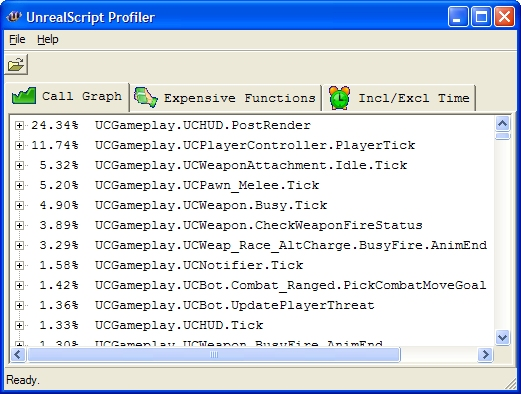

UDN
Search public documentation:
ScriptProfilerJP
English Translation
中国翻译
한국어
Interested in the Unreal Engine?
Visit the Unreal Technology site.
Looking for jobs and company info?
Check out the Epic games site.
Questions about support via UDN?
Contact the UDN Staff
中国翻译
한국어
Interested in the Unreal Engine?
Visit the Unreal Technology site.
Looking for jobs and company info?
Check out the Epic games site.
Questions about support via UDN?
Contact the UDN Staff
UnrealScript プロファイラ
ドキュメントの概要: これは UnrealScript (Unreal スクリプト) プロファイラ ユーティリティに表示されるデータの読み方の概要です。 ドキュメントの変更ログ: : Warren Marshall により作成。はじめに
UnrealScript では、何がいつ実行されるか、および、何が最もフレームレートを消費しているかが分りにくいものです。プロファイラ ユーティリティはこの点で最も威力を発揮します。
プロファイルの作成
プロファイリングは、コンソールにPROFILESCRIPT START を入力することでいつでも開始でき、 PROFILESCRIPT STOP を入力することで終了できます。終了すると、!(GameName)Game\Profiling\ フォルダに .uprof ファイルが作成され、これをビジュアライザを使って見ることができます。
このプロファイリングユーティリティは、 UnrealScript クラス内にあるパフォーマンスのボトルネック検出に非常に有力です。
プロファイルの表示
スクリプト プロファイラ実行ファイル (ueScriptProfiler.exe、Binaries ディレクトリにあります) を開始します。次に [File] (ファイル) メニューから [Open] (開く) を選択し、表示したい .uprof ファイルを開きます。 注意: スクリプト プロファイラ実行ファイルは、UE3 または UDK ディストリビューションの Binaries ディレクトリにあります。出力
データファイルをロードすると、有効な情報を含んだタブがいくつか表示されます。そこには以下で説明する情報が含まれています。[Call Graph](グラフ呼び出し)
表示されるパーセンテージは総合時間を表し、関数が他の関数を含む場合は、「self」が表示されそこに総占有時間が表示されます。[Call Graph] (グラフ呼び出し)のデータは、各関数の呼び出し時間とリターン時間をストリームとして収集します。ですのでビジュアライザは多くのグラフ呼び出しプロファイラと違って「仮定平均時間」に頼る必要が有りません。ビジュアライザのタイミングの問題とバグは別にして、データはスクリプトコードを実行するのにかかった時間全体を表しています。[Expensive Function] (コストのかかる関数)
このビューはファンクションコールを絶対総合時間 (usec で表す) でソートして表示します。ソートはトップノードを呼び出すコールごとの絶対総合時間およびトップノードが子ノードを呼び出すコールごとの絶対総合時間を基準にしています。これによりコストのかかる関数をドリルダウンすることが可能になり、フレーム時間の最悪のケースを改善することに役立ちます。たとえば、100 フレームに 1 回だけコールされるのですが、コールごとに 10ms かかる関数を考えてみましょう。これはフレームごとに 0.1ms かかることになります。これは通常のプロファイリングには急激な負荷として現われませんが、ゲームをプレイ中には認識される可能性が高いです。[Incl/Excl Time](総合/占有時間)
[Incl/Excl Time](総合/占有時間) タブは、総合/占有パーセンテージ、呼び出し回数、1 呼び出しあたりの総合/占有時間を簡潔な形で表示します。常に usec (百万分の 1 秒) で表示。Spike Call グラフ
Spike Call グラフのタブには、関数呼び出しのツリーが包括的な最大時間 (usec 単位) に基づいてソートされて表示されます。この時間は、関数の 1 度の呼び出しに費やされる最大時間を意味し、フレーム時間のスパイクの原因となった関数を特定するのに役に立ちます。ダウンロード
- ut2004.uprof: UT2004 からの出力をプロファイルしたサンプル スクリプト